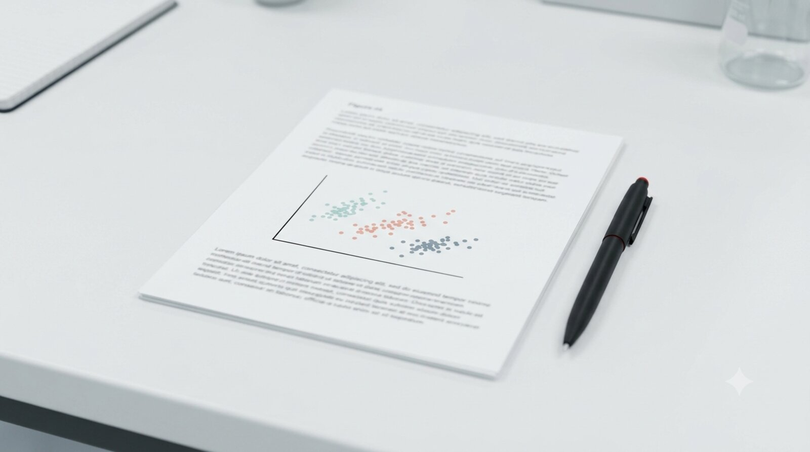

Getting Started in a Reproducible Biostatistics Lab: A Student Reading Guide
This post is a work in progress and may change.
A map drawn before the journey: knowing which signposts matter changes what you notice along the way.
Introduction
Every year a new graduate student arrives in the lab with a small dataset, twelve columns, two or three hundred rows, no codebook, and a clear scientific question. The student wants to begin the analysis immediately. Before a single line of R code is written, however, there is a substantial amount of infrastructure to absorb. That infrastructure includes a command-line environment, a version-control habit, a credential store, a reproducible project structure, and a shared toolchain that ensures the professor can run the same code two years later without debugging a broken environment.
This post exists because that infrastructure is documented across a series of posts on this blog, and the reading order matters. A student who reads the R language posts before understanding why the lab uses Docker will not know what they are R-coding for. A student who dives into the analysis posts before setting up their shell environment will spend their first week debugging path problems. A student who reaches an AWS instance before setting up pass will put a credential in a shell history file.
What follows is the professor’s recommended sequence, organized as eight phases spanning the first academic term. Phases 0 through 5 are the required core: roughly twenty hours of reading and code-along work that ends with a reviewed analysis in a containerized compendium. Phases 6 through 8 are assigned as the student’s own project demands them.
Revision note
This guide was first published on 2026-06-11 as an eight-post sequence that ended at exploratory data analysis. The 2026-09-11 revision keeps that core intact and extends it in three directions that the original omitted: a credentials and backup phase before students touch real data or cloud infrastructure, an explicit position on generative-AI use before students draft anything, and a testing, review, and dissemination phase after the first analysis is complete. Students who worked through the original eight posts have not wasted effort; they have completed most of Phases 0 through 5 and should begin at Phase 2.
The same revision included a consistency pass in which every post named below was read against its own stated prerequisites. That pass changed the order of Phase 1, promoted one post from optional to required in Phase 2, split Phase 6 into an analysis track and a package track, and corrected several descriptions that did not match the posts they described. Where two posts genuinely contradict each other, the contradiction is now named in the phase that contains it rather than left for the student to trip over.
Motivations
- New students consistently underestimate the cost of environment fragility; a principled introduction prevents the most common first-year productivity loss.
- The lab’s toolchain (Docker, renv, zzcollab, Quarto) has a learning curve that is much shallower with a map than without one.
- An explicit reading sequence sets consistent expectations across students and rotations, regardless of prior computational background.
- Credential hygiene and AI-use expectations are cheaper to establish on day one than to retrofit after a student has built six months of habits.
Objectives
- Provide an annotated, sequenced reading list that a student can work through independently.
- Explain why each post belongs at its position in the sequence rather than earlier or later.
- Set honest expectations about what a student will and will not be able to do after completing each phase.
- State a verifiable deliverable for each phase so that both the student and the professor can tell when the phase is finished.

What is this reading sequence?
The sequence spans most of the clusters on this blog: the Workflow Construct cluster (environment setup), the Security and Sync cluster (credentials and backup), the zzcollab Compendia cluster (reproducible project structure), the Palmer Penguins Arc (applied data analysis), the R Packages cluster (testing and review), and the Publishing cluster (dissemination). The sequence is deliberately cross-cluster because learning the environment without doing analysis, or doing analysis without a reproducible environment, produces an incomplete outcome in either direction.
Posts marked [no code required] can be read without a terminal open. Posts marked [code-along] contain exercises that the student should reproduce on their own machine before moving forward.
Each phase closes with a deliverable: a concrete artifact the student can show the professor. A phase is not complete when the reading is done; it is complete when the deliverable exists.
Prerequisites
The student is assumed to have:
- A macOS 13+ laptop with administrator access. Several posts in Phases 1 and 2 are macOS-specific in their commands even where the architecture generalizes; Linux students should expect to translate, and the Linux Mint post in the electives covers the divergences.
- An active GitHub account. Phase 1 additionally requires the GitHub CLI authenticated through
gh auth login, which Post 4 installs. - A second machine, virtual machine, or fresh user account. Three phase deliverables are verified by reproducing something somewhere else, and a student with only one machine cannot complete them.
- No prior Docker experience is required.
- Familiarity with R at the level of BIOS 600 or equivalent is helpful but not strictly required before Phase 5.
Accounts and hardware needed later, listed here so that students can request them before they are blocked:
- An external drive for the Time Machine tier in Phase 2.
- A Docker Hub account for the sharing post in Phase 8.
- An AWS account with IAM Identity Center for the cloud electives, which for institutional accounts requires coordinating with an administrator well in advance.
- An Anthropic API key for Phase 3.
Phase 0: Orientation
Day one. Read only, no terminal required.
Post 1: A Workflow Construct for the Modern Data Scientist
Cluster: Workflow Construct | Link: wf-construct-overview-anchor
Read this first because it provides the conceptual map for everything that follows. The post documents the layers of the lab’s computational stack (hardware, operating system, file-system layout, shell, editor, language toolchains, containerization, cloud or remote compute, and backup) and explains why each layer is treated as a first-class reproducibility concern. A student who skips this post and goes directly to the R tutorials will eventually hit a problem that requires understanding the layer below R. At that point they will not know where to look.
A warning about this post’s own prerequisites. The post opens by assuming git fluency through rebase, comfort writing shell scripts, and awareness of how Docker layers and renv.lock interact. A new student has none of that on day one, and this guide assigns the post anyway. That is deliberate: it is assigned here as a map, not as an instruction set, and a student who understands a third of it has gotten what Phase 0 is for. Re-read it at the end of Phase 4, when every one of its stated prerequisites has been met. The second reading is the one that pays.
What the student will be able to do after reading: articulate why reproducibility requires more than pinned package versions, and name the layer of the stack where any given configuration problem originates.
Estimated reading time: 30 minutes. [no code required]
Phase 0 deliverable: none. This phase is orientation.
Phase 1: The environment
Weeks 1 to 2. The steepest climb in the sequence, placed first so that the discomfort is behind the student before the reproducibility infrastructure adds cognitive load.
Post 2: Unix Command-Line Workspace Setup for Data Science Researchers
Cluster: Workflow Construct | Link: wf-unix-workspace-config
Read this second because the remaining posts assume fluency with the terminal. The post builds the terminal layer, the shell layer, and the dotfiles repository that keeps a research machine consistent. Students who use RStudio exclusively and have never opened a terminal will find this post the hardest in the sequence.
What the student will be able to do after reading: open a terminal, navigate the file system, install a package manager, and configure a shell prompt.
Estimated reading time: 45 minutes. [code-along]
Post 3: Refactoring a Personal Toolbox: Scripts versus Shell Functions
Cluster: Shell and Git | Link: sh-scripts-vs-functions
Read this third because the student is about to begin accumulating helpers, and the rule for where a helper belongs is much cheaper to learn before the accumulation than after. The rule is short: a shell function only when shell state must change, a versioned script otherwise. Applying it from the start keeps the dotfiles repository in Post 5 small and every helper testable with shellcheck. This is the only post in Phase 1 that states no prerequisites of its own, which makes it a safe place to put a student who is still catching up on Post 2.
What the student will be able to do after reading: decide correctly where a new helper belongs, and write a script that passes shellcheck.
Estimated reading time: 30 minutes. [code-along]
Post 4: Setting Up Git for Data Science Workflows
Cluster: Workflow Construct | Link: wf-git-for-data-science
Read this fourth because version control is the single most impactful habit a student can build in their first month, and because Post 5 cannot start without it. The post covers the configuration decisions that matter specifically for data science work: ignoring large data files, committing analysis scripts separately from rendered outputs, and writing commit messages that explain why a change was made rather than what was changed. It also installs the GitHub CLI and walks through gh auth login, which Post 5 lists among its own prerequisites. The Palmer Penguins analysis in Phase 5 will produce several dozen commits; this post establishes what those commits should look like.
What the student will be able to do after reading: configure git for data science, authenticate gh against GitHub, commit code with informative messages, and understand when not to commit a file.
Estimated reading time: 40 minutes. [code-along]
Post 5: Multi-Laptop macOS Bootstrap: Migrating Dotfiles to a Versioned Git Repository
Cluster: Workflow Construct | Link: wf-multi-laptop-dotfiles-bootstrap
Read this fifth because the lab expects configuration to be version-controlled from day one. This post explains how to move shell configuration files into a git repository so that rebuilding a machine (or adding a second one) is a two-command operation rather than a week of re-configuration. It expects an authenticated gh from Post 4, and it expects the repository to be private; dotfiles repositories are a well-documented source of leaked credentials, and the post is firm on this point.
A note on one stated prerequisite. The post opens by assuming that project content has already been migrated off Dropbox, which is Phase 2 material. Read that assumption narrowly: what Post 5 actually needs is that the dotfiles themselves live in ~ as plain files outside any cloud-synced directory, which is true for almost every incoming student. The broader project-content migration is correctly deferred to Phase 2.
What the student will be able to do after reading: create a private dotfiles repository, commit their shell configuration, and understand the difference between a symlink and a copy.
Estimated reading time: 45 minutes, with 3 to 4 hours for the migration itself. [code-along]
Post 6: Modern CLI Replacements for the Shell Layer
Cluster: Workflow Construct | Link: wf-modern-cli-tools
Read this sixth, and not earlier, because the post states plainly that the dotfiles repository and the zsh setup must already be in place: its payload is a configuration block added to .zshrc, and the canonical location for that block is beneath the FZF configuration installed in Post 2. A student who reads it before Post 5 will paste the block into an unversioned file and lose it on the next machine.
The eight utilities it installs (ripgrep, fd, bat, eza, zoxide, delta, lazygit, fzf) appear in commands throughout the later posts, and a student who has not installed them will read those commands as typos. The post also establishes the substitution habit: every tool is introduced alongside the classic command it replaces, so the student retains a fallback on machines where only the classics exist.
What the student will be able to do after reading: search a codebase with ripgrep, navigate with zoxide, and read a git diff through delta.
Estimated reading time: 40 minutes. [code-along]
Editor elective
Students who intend to leave RStudio should add wf-neovim-data-science-ide and rp-zzvim-r-introduction here. A student who is productive in RStudio should stay there through the core phases and revisit this decision after Phase 5. Switching editors and learning Docker in the same week is a predictable way to lose a month.
Calling this elective has one consequence worth naming: the Phase 3 post on LLM-augmented editing lists the editor setup among its own prerequisites, because the pattern it documents reviews diffs in an editor buffer. RStudio students can follow that post using RStudio’s own diff viewer, but they should expect the keystrokes to differ from the ones on the page.
Phase 1 deliverable: a private ~/dotfiles git repository with a working install.sh, pushed to GitHub through an authenticated gh, that reproduces the student’s shell configuration on a second machine or a fresh user account. The reproduction is the deliverable, not the push.
Phase 2: Credentials and durability
Week 3, before the student touches real data or any cloud resource.
This phase did not appear in the original version of this guide, and its absence was the most consequential gap. Phases 4 onward put students in contact with GitHub tokens, container registries, and in some projects AWS and clinical data. Credential habits formed in that context are formed under deadline pressure, which is the wrong time to form them.
Read in this order:
- sec-pass-password-manager: installs
pass, the GPG-backed Unix password store, and establishes the key-generation and backup habits the rest of the phase assumes. [code-along] - sec-aws-and-pass-secrets: the secret-injection patterns that keep API keys and tokens out of dotfiles, shell history, and the working tree, plus the AWS IAM Identity Center workflow that replaces plaintext credentials. [code-along]
- sec-dropbox-to-portable-sync: splits project content into code, data, and reconstructable caches, and picks a sync mechanism for each. An earlier version of this guide listed this post as optional. That was wrong: the threat-model post below states outright that it requires the three-layer sync architecture to be in place, and without it the controls have nothing to attach to. [code-along]
- sec-three-tier-backup-architecture: automated git pushes, cloud sync, and Time Machine, plus the bulk GitHub archival procedure. [code-along]
- sec-multi-laptop-threat-model: asks what all of the preceding infrastructure is actually worth if the threat model is wrong. Read it last, not first, so that the controls being evaluated are ones the student has actually built. [no code required]
Two contradictions to expect, and how to resolve them. These four posts were written independently and do not fully agree.
First, the dotfiles post in Phase 1 and the sync-migration post here each name the other as a prerequisite. Resolve the circle in the order this guide gives: dotfiles first, project content second. The sync post’s own Layer 1 section assumes the dotfiles work is already done, which settles the direction.
Second, the backup post lists a cloud sync service, naming Dropbox among the options, as the third tier of its architecture, while the sync-migration post is an argument for leaving Dropbox. These are less opposed than they look. The backup post wants an off-site copy of a modest set of files; the migration post objects to Dropbox as the primary store for project content and append-only history. A student can satisfy both by keeping a cloud tier for backup only. Students should raise this with the professor rather than resolving it silently, since the lab’s position on which service fills that tier has changed since the backup post was written.
Estimated time: 6 to 8 hours of reading and configuration. The sync migration adds roughly a day of inventory and decision work if the student arrives with an existing cloud-bound workflow, and close to none if they do not.
Phase 2 deliverable: a populated pass store with the GPG private key and revocation certificate backed up off the laptop, no plaintext credential anywhere in the dotfiles repository from Phase 1, and a backup the student has verified by restoring from it. The verification is the deliverable; an unrestored backup is a hypothesis.
Phase 3: Ground rules for generative AI
Week 3, concurrent with Phase 2.
The review methodology posts in Phases 6 and 7 presuppose that drafting is AI-assisted, and each of them opens by asking for the conversation log or prompts used during drafting. A student who has not been keeping those logs since the beginning cannot complete any of those reviews later. That single fact is why this phase sits here rather than at the end.
- pub-ai-course-policy-survey: a review of how peer graduate biostatistics and statistical computing courses handle generative AI, from outright bans to required use, followed by a policy proposal for PHB 228 at UCSD. Read for the reasoning, and note what it is: a proposal written for a course, not a statement of lab policy. The lab adopts its central expectation, that a statistician who cannot explain a line of generated code cannot defend it, and students should ask the professor directly for the rest rather than inferring lab practice from a syllabus. [no code required]
- wf-claude-code-in-shell: the integration pattern the lab actually uses, with the per-project
CLAUDE.mdconvention as the load-bearing artifact. It needs an Anthropic API key stored inpass, which is why Phase 2 comes first, and it assumes the editor setup from the Phase 1 elective. It also cites an internalzzgithelper that has no published post on this blog; ask the professor for it rather than searching. [code-along]
Estimated time: 1.5 hours of reading, plus roughly 15 minutes per project for CLAUDE.md authoring thereafter.
Phase 3 deliverable: a CLAUDE.md in the student’s dotfiles repository or first project, a one-paragraph written statement of what the student will and will not delegate, and a decided place where drafting conversation logs are retained. The logs are not optional housekeeping; three separate review methodologies in Phases 6 and 7 require them as an input. The statement is revisited at the Phase 6 review, where it is tested against what the student actually did.
Phase 4: The compendium
Weeks 4 to 5. The capstone of the setup half of the sequence.
Post 7: Reproducible Blog Posts with ZZCOLLAB: A Quarto Workflow
Cluster: zzcollab Compendia | Link: zc-quarto-compendium-intro
Read this now because it introduces the zzcollab framework that the lab uses for every analysis project. The post explains the Five Pillars of reproducibility (Dockerfile, renv.lock, .Rprofile, source code, research data) and shows how a single zzc analysis command scaffolds a project that satisfies all five. Students who have completed Phases 0 through 3 will recognize every tool introduced here; the new element is understanding how they fit together in a single project directory.
What the student will be able to do after reading: explain the Five Pillars, run zzc analysis to create a compendium, and understand what the generated Dockerfile is doing.
Estimated reading time: 50 minutes. [code-along]
Post 8: zzcollab Analysis Profile Walkthrough: A 55-Item Step-by-Step Guide
Cluster: zzcollab Compendia / penguins-arc | Link: zc-analysis-profile-walkthrough
Read this now because it is the most detailed practical guide the lab has produced. The 55-item checklist walks through every command, every R snippet, and every file the student will need to produce when setting up a real analysis project. The walkthrough uses a small Palmer Penguins dummy dataset identical in structure to the datasets students bring from the clinic. After it, the student has a running Docker container with a verified R environment, a working renv snapshot, and a Quarto report that renders to PDF inside the container.
What the student will be able to do after reading: build a Docker image from a generated Dockerfile, enter the container, install R packages, snapshot with renv, and render a Quarto report.
Estimated reading time: 90 minutes. [code-along, intensive]
Phase 4 deliverable: a compendium the student can rebuild from scratch, in a fresh clone, in under ten minutes. The professor should watch this happen once. A container that runs is not evidence; a container that rebuilds is.
Phase 5: The first analysis
Weeks 6 to 8. Performed inside the compendium built in Phase 4, not in a new directory.
Post 9: The Pipe Equivalence Myth
Cluster: R Language | Link: rl-pipe-equivalence-myth
Read this now because the analysis in Post 10 relies on idiomatic tidyverse pipe chains, and a subtle but important R semantic is easy to misapply. This post demonstrates precisely when piped and nested function calls are not interchangeable, using a worked example drawn from expression-capturing wrappers. Students without deep R experience will find this post eye-opening; students with prior R experience will find it clarifies something they may have accepted on faith. Either way, it prevents a class of silent bugs that appear in clinical data workflows.
What the student will be able to do after reading: predict when pipe-rewriting a nested call changes behavior, and write a minimal reproducible example to test the boundary.
Estimated reading time: 30 minutes. [no code required, but code-along is valuable]
Post 10: Palmer Penguins Part 1: Exploratory Data Analysis and Simple Regression
Cluster: Palmer Penguins Arc | Link: pp-eda
Read this now because it applies all preceding infrastructure to a complete statistical analysis. The dataset (333 complete observations across three species and three islands, nine variables of which four are morphometric) is intentionally small and public, the same scale as many clinical pilot studies. Note that the post works from complete cases; the raw palmerpenguins data has 344 rows, and the difference is the first data-cleaning decision a student meets. The post covers exploratory visualization, a simple linear regression of body mass on flipper length, residual diagnostics, and a species-stratified reanalysis that reveals the importance of biological confounders. The compendium structure from Post 8 is assumed throughout; the student should complete this analysis inside the Docker container they built in that post.
What the student will be able to do after reading: run a complete EDA-to-regression analysis inside a reproducible compendium, interpret residual plots, and recognize when a confounder materially changes a regression estimate.
Estimated reading time: 60 minutes. [code-along]
The rest of the Palmer Penguins arc
The original version of this guide stopped at Post 10 and listed the remainder as optional further reading. That was too conservative. Confounding and residual diagnostics are immediately applicable to most clinical pilot datasets, and a student who stops at simple regression has not yet met the situation their own data will present. Continue in cluster order:
- pp-multiple-regression: R-squared moves 0.762, then 0.816, then 0.863 as predictors are added, with species identity supplying the final step. The confounding lesson.
- pp-cross-validation: ten-fold cross-validation and comparison against a random forest.
- pp-diagnostics: systematic checks on linearity, normality, and influence.
- pp-random-forest: the interpretability-versus-performance tradeoff, with a two percentage point margin as the occasion for it.
- pp-body-mass-prediction: Simpson’s paradox in the morphometric relationships.
- pp-grouped-plots-with-purrr: programmatic plot generation with
map2()andpmap().
Pair rl-dynamic-column-names with the final post; the two problems arise together.
Estimated time: 5 to 7 hours across the six posts.
Phase 5 deliverable: the student’s own dataset analyzed in their own compendium, following the structure of the penguins arc, rendered to PDF inside the container and pushed to GitHub.
Phase 6: Quality and review
Weeks 9 to 12. Assigned once the student has code worth reviewing.
An analysis that renders is not an analysis that is correct. This phase supplies the checks and the review vocabulary.
Read the split in this phase before starting it. The first two posts apply to every student. The next three were written about R packages, and a student whose Phase 5 work is an analysis compendium does not yet have the inputs those posts ask for: a tests/testthat/ directory to convert, a package on GitHub with CI across three operating systems, or the R CMD check output and design documents the review methodology wants assembled on the desk before Phase 1 of the review. Students on a package track take all six in order. Students on an analysis track take the first two, then read the review methodology for its vocabulary and its ownership test while skipping its package-specific setup, and return to the rest when their project produces a package.
- rp-testing-data-analysis: applies software-engineering testing practice to a data analysis pipeline, using testthat and assertr. Read first; it motivates the rest. Note the framework mismatch with the post below: this one teaches the concepts in testthat, and the lab writes its suites in tinytest. The concepts transfer without modification.
- rp-testthat-to-tinytest: the lab’s test framework is tinytest. This post explains the conversion and, more usefully, what tinytest’s smaller surface does and does not cost. A student with no existing testthat suite should not manufacture one to convert; the post says plainly that greenfield work starts in tinytest directly, and such a student reads this for the assertion vocabulary and the
tests/tinytest.Rbootstrap convention. - rp-package-update-workflow: the full lifecycle of a change, from feature branch through CI on three operating systems. Assumes an existing package on GitHub. Package track only.
- rp-code-review-methodology: the five review phases, plus the ownership test. Students should read the ownership test against the Phase 3 statement they wrote. Its prerequisite list asks for conversation logs from drafting, which is the Phase 3 deliverable coming due.
- rp-code-review-exemplar: the methodology applied end to end to the zzobj2fig package. Package track only, and best read immediately after the methodology rather than separately.
- rp-ai-package-review-checklist: the failure modes specific to AI-generated R code, and what the checklist caught across fifteen packages. Currently in draft, and the draft flags its own findings as needing re-verification. Request the pre-publication version from the professor and treat its numbers as provisional.
Estimated time: 5 to 6 hours on the package track, 2 to 3 on the analysis track.
Phase 6 deliverable: a tinytest suite covering the Phase 5 analysis, at minimum the data-integrity checks after every join and transformation, and a written review of another student’s work using the five-phase methodology. Reviewing is learned by reviewing.
Phase 7: Writing and dissemination
Ongoing, assigned when the student has a result worth communicating.
The production path, in order:
- pub-r-script-to-rmd:
knitr::spin()and the fastest route from a working script to a presentable report. - zc-markdown-to-blog-workflow: the lab’s blog-post compendium conventions, covering initialization from scratch. This is the one to read.
- zc-blog-post-template: a scaffold, not an essay. It still carries its unfilled authoring instructions and placeholder prose in the body, which is what a template is supposed to look like. Copy it when starting a post; do not sit down to read it.
- zc-manuscript-report-elements: the seven elements a manuscript
report.Rmdmust have. Missing one is easy and hard to diagnose later. - pub-multi-language-quarto and pub-hosting-quarto-books-netlify: needed only for polyglot documents and for book-series hosting respectively.
Then the review methodology matching the artifact:
Phase 7 deliverable: one published artifact, reviewed under the matching methodology, with the ownership test answered explicitly in writing.
Phase 8: Scaling the compendium
Assigned when the student’s project outgrows a single analysis.
- zc-analysis-initiation-checklist: the 55 items that move a collaborator’s emailed CSV to an archival-ready compendium.
- zc-share-rmd-via-docker: sharing reports and Shiny applications without the recipient debugging package versions.
- zc-tiered-ci-strategy: how to stop CI from lying. Required before the student trusts a green badge.
- zc-github-actions-workflows: which workflow combination each workspace type actually needs.
Phase 8 deliverable: a project whose CI fails when it should. A student who has never seen their own CI turn red has not tested it.
Electives, assigned by project rather than by week
Shiny projects: shy-shiny-with-observable, shy-prototype-with-chatgpt, cln-shiny-docker-caddy-hosting.
Clinical and cloud projects: cln-multilang-trial-validation, cln-aws-ec2-provisioning, cln-zzedc-investigator-independence. Phase 2 is a hard prerequisite for all three.
Habit and tooling: sh-daily-research-log, wf-pocket-terminal-ttyd-tailscale, wf-linux-mint-on-macbook, pub-obs-r-screencasts, rp-vim-r-repl-plugin.
A Note on Sequence Flexibility
Phases 0 and 1 can be compressed into a single week by a student who arrives with a working Unix environment and prior git experience; such a student may skim Posts 2, 3, 4, and 6 and should still work Post 5 and complete the Phase 1 deliverable, which is the part that actually tests the claim. The ordering inside Phase 1 is not arbitrary and should be preserved even when skimming: Post 4 authenticates the gh that Post 5 needs, and Post 6 writes into the repository that Post 5 creates.
Phase 2 is not skippable, regardless of prior experience. Neither are Posts 7 and 8. Phases 6 through 8 are ordered by when the student’s project needs them rather than by week, and a student whose project produces a package before it produces a manuscript should invert Phases 6 and 7.
Post 9 can be moved forward to any point after Phase 1 if the student has prior R experience and wants an early technical anchor.
Things to Watch Out For
- The reading load in weeks 1 to 3 is front-heavy. Phases 1 and 2 together are eleven posts. The reading is not the bottleneck; the dotfiles and
passdeliverables are. Pair students for those two deliverables if the cohort is new to Unix. - Three posts on this list are drafts (
rp-ai-package-review-checklist,wf-voice-copyedit-pipeline,pub-open-textbook-guidebook). Do not assign a draft to a student working unsupervised; request the pre-publication version from the professor. - Docker disk usage. The
rocker/tidyversebase image is approximately 1.2 GB. Students on a shared machine or with a limited SSD should verify available space before Post 8. - renv restore failures. If
renv::restore()fails inside the container, the most common cause is a PPM snapshot date that predates the package version. The 55-item walkthrough (Post 8) documents the recovery steps. - Inline R evaluation in Quarto. Post 10 uses inline
`r `expressions in prose. These are evaluated regardless of the document-leveleval: falsesetting. A student who setseval: falseto suppress code blocks will still see inline expressions attempt to run. - Pipe version mismatch. The lab uses the native R pipe
|>(R 4.1+). Code copied from older tutorials using%>%will behave differently in subtle ways; Post 9 explains exactly where the difference matters. - Shell escaping in Docker. Several Makefile targets in Post 8 use single-quoted R expressions passed to
Rscript -e. Double-quoting, nested variables, or$characters inside those expressions require careful escaping; the walkthrough flags the three locations where this trips up new students. - GPG key loss in Phase 2. A
passstore whose GPG private key is not backed up is an encrypted brick. The revocation certificate and key backup are part of the Phase 2 deliverable for exactly this reason.
Lessons Learned
Technical. The Five Pillars framework (Post 7) converts what appears to be a collection of independent tools into a coherent reproducibility contract. Once a student understands that the Dockerfile, renv.lock, and .Rprofile are three sides of the same constraint, the lab’s conventions stop feeling arbitrary and start feeling inevitable.
Process. The most efficient path through this reading list is one where the student builds a single compendium throughout Phases 4, 5, and 6, adding to it incrementally rather than creating three separate projects. The professor recommends assigning a single directory name at the start of Phase 4 and carrying it through to the end of Phase 6.
On sequencing. The first version of this guide ended at exploratory data analysis, on the theory that a student who could produce a rendered regression inside a container had everything they needed. That theory failed in two places. Students reached AWS credentials without a credential store, and students drafted with AI assistance without a stated position on what they were delegating. Both gaps were visible only in retrospect, which is the usual way with a curriculum.
Philosophical. Reproducibility is not a property of a finished analysis; it is a property of the process that produced it. A student who runs every code block in Phase 4 but skips the git commits has a directory that renders but not a compendium that reproduces. The distinction matters when, six months later, a reviewer asks for the exact code used to produce Table 1.
Limitations
- The reading list is calibrated to the lab’s current toolchain. Students joining the lab more than twelve months after this post’s revision date should verify that the zzcollab version referenced in Post 8 matches the version installed in the lab’s current base image.
- The phase durations are estimates from a small number of rotations and have not been measured systematically. Phase 2 in particular has been assigned to too few students to calibrate its time cost with confidence.
- The sequence assumes a single student working alone with periodic professor contact. It does not address collaborative workflows on a shared compendium, which the lab handles by convention rather than by documentation.
- Phases 6 through 8 have not yet been run end to end by a student who began at Phase 0. Their ordering is reasoned rather than tested.
- The posts in this sequence were written independently over roughly two years and cite each other by an internal post numbering that does not appear on the published site. Students will encounter references to ‘post 24’ or ‘posts 64 through 66’ with no way to resolve them. The phase structure here is the intended replacement for that numbering, and the professor should be asked whenever a cross-reference cannot be resolved.
- The sequence assumes the toolchain versions the posts were written against. Two are already visibly inconsistent with each other: one zzcollab post requires version 0.4 or later, another requires 2.4.0 or later. Verify against the lab’s current image rather than against either post.
- Phase 1 and Phase 2 together now run to eleven posts and something close to two full working days of configuration. This is the heaviest part of the sequence and the part most likely to need trimming after a cohort has been through it.
Opportunities
- A lab-internal Slack channel or discussion group where students compare notes on the 55-item walkthrough (Post 8) would substantially reduce the time spent on the three or four predictable sticking points.
- A short diagnostic exercise after Phase 4 (can the student rebuild their container from scratch in under ten minutes?) would give the professor an early signal on whether the infrastructure is genuinely understood or merely completed. The same idea applies to Phase 2: can the student restore their
passstore onto a second machine? - The collaborative-workflow gap noted under Limitations is the most valuable missing post on this blog. Two students sharing one compendium currently have no documented convention for branch naming, data handoff, or renv.lock conflict resolution.
Wrapping Up
What Did We Learn?
A new graduate student who completes Phases 0 through 5 will have traversed the same conceptual arc that took most senior lab members two or three years of trial and error: from a bare terminal to a containerized, version-controlled, reproducibly rendered analysis with a credential store behind it. That core is roughly twenty hours of active engagement. Phases 6 through 8 add the review and dissemination habits that turn an analysis into a contribution.
The sequence is not an onboarding checklist. It is a map. The student who finishes Phase 5 has not arrived; they have acquired the vocabulary and habits that make the real work possible.
See Also
For the complete zzcollab documentation, see zzcollab.sh documentation.
Reproducibility
This post contains no embedded R code. There is nothing to reproduce computationally. The reading list is current as of September 2026; the professor will update it when post URLs change or new required posts are added to the sequence.
Let’s Connect
If you are a new student in the lab and have questions about this reading sequence, reach out via the lab’s internal Slack. If you are reading this from outside the lab and want to discuss the zzcollab framework or the lab’s reproducibility practices, open an issue on the zzcollab GitHub repository or contact the author directly.